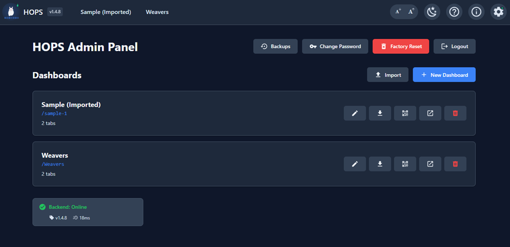
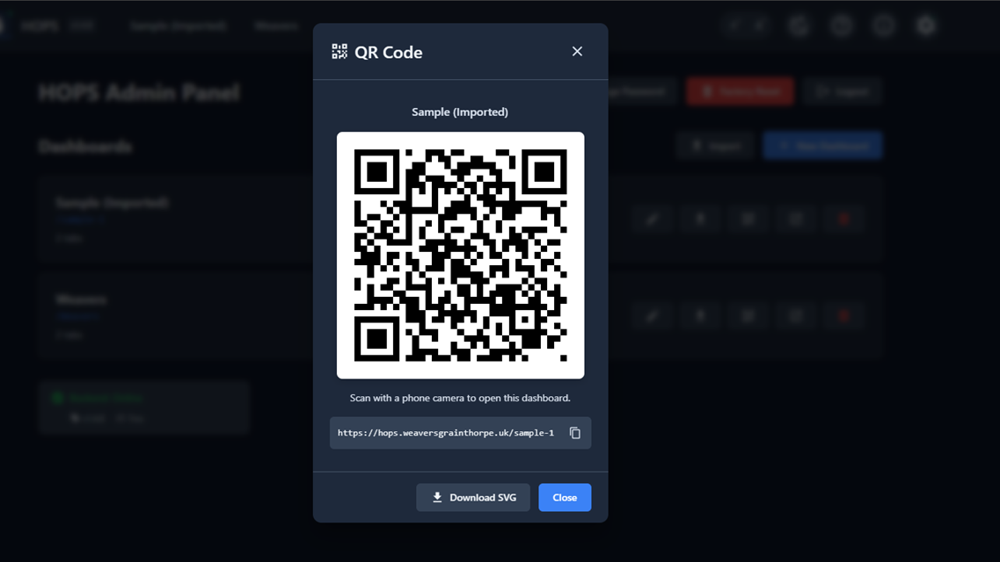
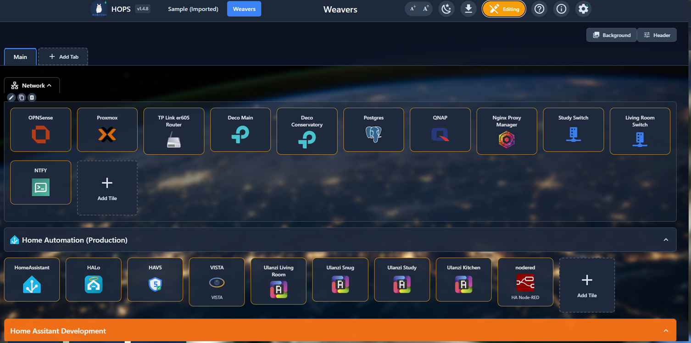
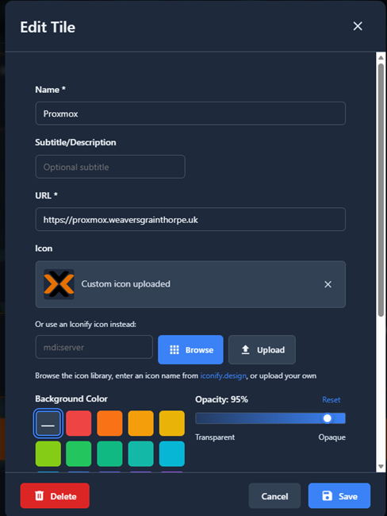
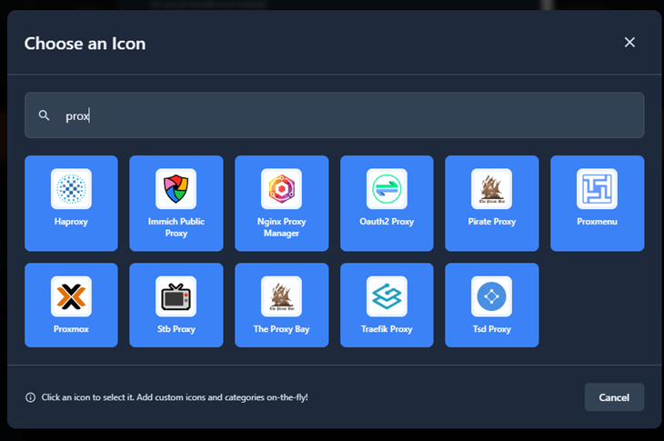
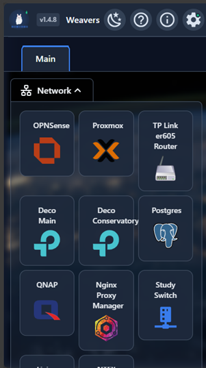

A homelab dashboard without the YAML.
A self-hosted homepage dashboard for your homelab. Drag-and-drop tiles, multiple dashboards, QR codes for phones — all configured through the UI, never through a config file.
Why HOPS?
There are already plenty of homelab dashboards out there. HOPS exists because none of them quite matched what I wanted.
100% GUI editing
Click, drag, configure. No YAML files. No JSON editing. No "simple" config files that inevitably become not-so-simple.
Single binary
One executable plus a SQLite database. No runtime dependencies. Download, run, done. Docker works too.
Multiple dashboards
One install can host many dashboards at different URLs — /home, /network, /media. Each fully customisable.
Built-in QR codes
Generate a scannable QR for any dashboard. Point your phone camera at it to open the dashboard — no typing URLs.
Status checks
HOPS can ping your tiles to show up/down indicators, so you can see at a glance which services are reachable.
Imports your old dashboard
Already on Homer, Dashy, or Heimdall? HOPS imports your existing config, so trying it doesn't mean starting over.
Screenshots
A few of the interfaces you'll actually spend time in.






Install
HOPS runs on Linux, macOS, and Windows — x86-64 and ARM64 (Raspberry Pi 3B+/4/5/Zero 2 W). No dependencies.
🐳 Docker
services:
hops:
image: ghcr.io/weaversgrainthorpe/hops:latest
ports:
- "8080:8080"
volumes:
- hops-data:/app/data
restart: unless-stopped
volumes:
hops-data:Then docker compose up -d and open http://localhost:8080.
📦 Binary
# Download for your platform from Releases
curl -LO https://github.com/weaversgrainthorpe/HOPS/releases/latest/download/hops-linux-amd64.tar.gz
tar -xzf hops-linux-amd64.tar.gz
mkdir -p data
./hops-linux-amd64 --port 8080 --data ./data --frontend ./frontend/buildDefault login: admin / admin (you'll be forced to change it on first login).
For the full walkthrough see the Quick Start guide, or jump to the Deployment guide for systemd, reverse proxies, and backups.